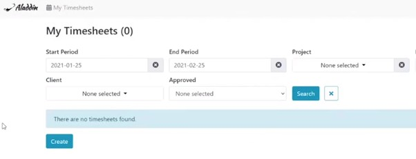
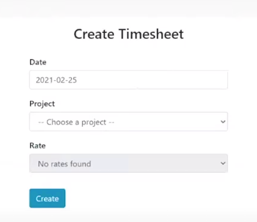

Commetric Freelancer Training
Welcome to your training course. Here you'll find the resources and guidance you need.
›Freelancers at Commetric2 resources
WHAT DOES A FREELANCE MEDIA ANALYST DO?
- Using the tools provided, delivers daily, weekly, or monthly monitoring alerts or analysis reports on the media response to a client’s brand or product.
- May also deliver specific ad-hoc requests, media analysis projects or INA.
- Reports to a Project Manager.
- Using the Commetric methodology, reviews and analyses media coverage.
- Responsible for completing all project tasks/requirements as assigned by the Project Manager within the assigned timeframe – articles coding, exporting data, graphing, text, PPT compilation, etc.
- Responsible for adhering to the client’s brief and requirements for the project.
- Responsible for meeting all quality standards when completing tasks.
- Responsible for correcting own mistakes.
- Maintaining above average understanding of Cogent, Excel, and PPT as needed.
- Responsible for meeting the required quality standards.
WHAT IS A FREELANCE MEDIA ANALYST GOOD AT?
- Handling and honoring the freedom that they are given.
- Managing their own time.
- Adjusting priorities when necessary.
- Ensuring that their work meets customer objectives.
- Ensuring that their work follows and is in accordance with the project management plan.
- Ensuring that their work is delivered always on time.
WHAT IS EXPECTED FROM A FREELANCE MEDIA ANALYST?
- To be able to work independently on a newsletter without shadowing/supervision within 2 weeks of intensely working on a newsletter project.
- To use comfortably the Signal, Onalytica, or other platforms as required for the project within 1 week of intensely working on a newsletter project.
- To learn from mistakes. The PM and the project team will support the new colleague in any way possible; constant feedback will be provided. If feedback is delayed, the new colleague should ask for it. The new colleague is responsible for implementing the given feedback and making sure the same mistakes do not appear again.
- To fill in the timesheet reporting module in Aladdin on a daily basis. Accurate reporting is vital. If unsure about how to report your hours, please consult with the PM on the project.
›HR-Related Q&A0 resources
How to Report Your Hours in Aladdin
All freelancers are required to report their working hours in Aladdin on a daily basis. Follow the steps below to make sure your timesheet is submitted correctly.
Step 1. Log in to Aladdin
Log in using the credentials provided to you by HR.

Step 2. Create a timesheet entry
Go to My Timesheets and click the green Create button.

Step 3. Enter the details
Indicate the date and the project. You will also be able to select a rate. Choose the appropriate option:

- TEST — for training hours.
- Hour Freelancer — for regular work.

Step 4. Report your hours daily
Enter your hours at the end of each day.
Once the entry has been finalised, your Project Manager (PM) will be notified. They will review and approve it before the end of the month so that the Finance Department can proceed with payment.
Report your hours daily and make sure all hours for the month have been entered in Aladdin by the first day of the following month.
Deadlines, Availability & Payments
Deadlines
Freelance projects have set deadlines. These may include daily deadlines, weekends and official bank holidays.
Your Project Manager will explain the requirements and timeframe for the project you will be working on.
Availability
If you cannot deliver on a project for a particular day or period, discuss this with your PM in advance. This gives them enough time to find a replacement.
This applies to deadlines on regular working days, weekends and official bank holidays.
If an unexpected event prevents you from doing the work, inform your PM immediately.
Payments
You will receive your payment by the 10th day of the following month.
Before then, please make sure that:
- All newsletters and reports have been delivered on time.
- All your hours have been reported in Aladdin by the first day of the new month.
Questions or concerns?
For project-related questions, please contact your Project Manager. You can also reach out to:
Emilia Klayn
Project Manager
›Cogent basics2 resources
What Is Cogent, How Does It Work, and How Does It Benefit Our Work?
Have a look at Radina Ivanova's tutorial to learn how to start using Cogent.
Table of Contents
What Is Cogent?
Cogent is the platform we use to analyse the media conversation (i.e. to observe and note how the client is being represented in the media discussion) and to monitor the media conversation (i.e. to constantly keep track of the ever-changing landscape and to summarise the articles that mention the client or any topics of interest).
Cogent hosts and facilitates all analysis and monitoring projects. Each client that has chosen Commetric as their service provider has one or several dedicated projects within the Cogent environment.
Signing In
Refer to the video tutorial above for guidance on getting started with Cogent.
Media Analysis View
Use the tutorial above to familiarise yourself with the Media Analysis View.
Left-hand Side
See the tutorial for an overview of the left-hand side of the Cogent interface.
Centrefold
See the tutorial for an overview of the centrefold section of the Cogent interface.
Right-hand Side
See the tutorial for an overview of the right-hand side of the Cogent interface.
Download the PowerPoint and Word files and have a look through them whenever you need a refresher on the Cogent basics.
›Guide to Media Monitoring2 resources
Get to know how we do media monitoring at Commetric with Ralitsa Lazarova and Emilia Klayn!
Watch Guide to Media Monitoring directly on YouTube ↗
Table of Contents
- What is Media Monitoring?
- Using Cogent for media monitoring
- Writing summaries and snippets
- Finalizing and sending newsletters
What is Media Monitoring?
Media monitoring is the activity of gathering the output of the print, online, and broadcast media. It is based on analyzing a diverse range of media platforms to identify trends that can be used for various reasons such as public relations, marketing, planning communications activities, and tracking the public opinion regarding a product/company/person/event etc.
Article Upload and Editing Articles
Sometimes an article may be missing from the database, or a client may specifically ask us to include an article in the analysis. In such cases, we upload articles manually.
- Click the drop-down arrow next to Articles at the top-right corner of the main page in Cogent.
- Click Create new.
- Fill in the fields with the metadata of the article you need to upload. Be careful with the date field: it is automatically set to the current date when you upload the article. Change it to the article's publication date. The time is not always available, so it is not necessary to update it.
- Click Create if this is the only article you need to upload, or Create and go to next if you have other articles to upload.


Duplicates vs. Reprints
During your induction, you will often hear the phrases "everything is project specific" or "it depends on the project". However, this is one of the few (almost) universal things across projects. It is important to understand the difference between duplicates and reprints because this often determines whether an article is relevant.
Duplicates
Duplicates are identical articles published by the same publication on the same day or on two consecutive days. They usually also have the same URL.
Whenever we come across duplicates, we process only one article and mark the rest as irrelevant. We process the article with the most recent publication date and time, or the one that is the most extensive.
If the article we process does not have a URL while the others do, make sure to add the link by editing the article.
One project-specific case is when the same article is published online and in print. In some cases, we consider them duplicates; in others, both are relevant. Consult your PM on how to proceed in such cases.

Why Do We Have Duplicates?
Publications aim to publish an article as soon as news breaks, trying to be fast, informative, and ahead of other outlets. However, the initial information is not always complete. As the news develops throughout the day, people or companies comment on it and more information is revealed.
Therefore, publications often update their articles numerous times throughout the day and may even change the article's title. In Cogent, these updates appear as separate articles. News wires are a common example of this, including Reuters, AP, AWP, and DPA.
Examples
This is an example of the same article appearing in Cogent with the same title. We always process the latest published version because it is usually the longest and most recently updated.

Reprints
Reprints are identical articles published in two or more different outlets. They are usually relevant and should all be processed, unless your PM advises otherwise based on the client's needs.
Why Are Reprints Relevant?
Each publication has a different readership and reaches a different audience. For the purposes of the analysis, it is important to consider how many readers an article has reached and how it has influenced their opinion of the client or the topic of interest.
Examples
News wires are often reprinted by other media because they are usually the primary source of information. In the example below, Daily Mail, Yahoo, and Swissquote have all published an article that originally appeared in Reuters. The pieces are all relevant because they reach different audiences.

ABS Search
ABS in Cogent is a type of Boolean search where you can use special words or symbols to limit, widen, or define your search. This is possible through Boolean operators such as AND, OR, and NOT.

Cogent provides additional operators that allow you to further refine and filter the articles you are interested in. By hovering over the search field, you can view a full list of these operators.

When Might You Use ABS Search in Media Monitoring?
- When you have a lot of syndicated coverage that you need to add as "also in".
-
To identify stories with different headlines covering the same topic.
You can use shared keywords to capture varied coverage of a single
event or issue.
Example:
"summit 2025" AND Dubai -
To find articles that include quotations or commentary.
Example:
"said" OR "commented" OR "highlighted"

›The ultimate guide for snippetting and summarizing for a newsletter0 resources
The ultimate guide for snippetting and summarizing for a newsletter
What is media monitoring and curating a newsletter?
Media monitoring is the activity of monitoring the output of the print, online and broadcast media. It is based on analyzing a diverse range of media platforms in order to identify trends that can be used for a variety of reasons such as marketing, planning and tracking the public opinion of the product/company in order to be able to react if a critical crisis emerges. As a result of the monitored coverage, we curate a newsletter on a daily, weekly, biweekly or monthly basis, depending on the preference of the client. The newsletter aims to give a full perception with examples and insights into the coverage of our client, noting any drastic changes, emerging trends, important articles or coverage of competitors. The newsletter should usually be sent at the same time every day, week, bi-week, or month, as agreed with the client and we should prioritize punctuality.
Newsletters can vary in focus. For example, some clients may be interested only in coverage related to themselves, and others may prefer a broader overview of the industry with more insight into their competitors’ or customers’ landscape. Regardless of the focus, there are usually highlighted keywords in the article in Cogent or in the snippet in Signal, which help guide us toward the topic of interest or where the client is mentioned.
Cut off time
In some projects, when we monitor media coverage we aim to include all articles before sending, however, this is not always possible because articles appear all the time. If we see new coverage a few minutes before sending, we cannot process them as fast and still be on time. This is why we work with a cut-off time, as discussed with the client. What this means if the newsletter is sent out at 10:30 am, the cut-off point may be 10:00 am, so we should include all articles published up to 10:00 am. If there are new articles at 10:15 am, in that case, we are not required to include them on the same day, unless the client explicitly says so and is informed that this may lead to a slight delay in the delivery. Of course, there are exceptions, determined by the specifics and importance of the coverage, so when in doubt, the person to contact is the PM. On the following day, we will include snippets for all articles that have been uploaded into Cogent after 10:00 am on the previous day.
Relevancy
When setting up a search for a project, MCs and PMs usually use a set of keywords and criteria based on publication, language, and country of the articles. Usually, they are very precise, however, due to language specifics and noise in publications such as hyperlinks and ads, which lead to falsely relevant articles, analysts should always start with checking the coverage for relevancy. Criteria are project-specific, usually, clients want to monitor key markets and publications for mentions of their company, their competitors or a topic, for research purposes. Any coverage outside the given guidelines is irrelevant and should not be included in the newsletter. (e.g. If our client is Lime, the company for e-scooters, but there is an article on lime, the fruit, it is irrelevant.)
Summaries vs Snippets
Once we check the coverage for relevancy, we start with putting together the newsletter, following a given template and always making sure that the date is correct. When adding an article to the newsletter, we include the title, date, publication and hyperlink, if available. Author and country are added according to the client’s preference. An example of what the article is about is commonly included under the title and there are three ways of doing that – adding a snippet, a summary, or the whole article body. Snippets are an exact copy of the key message in the article – usually, a few sentences, mentioning the client, competitor, or the monitored topic, which is the focus of the article. Summaries provide a concise overview of the text's main points in our own words, focusing on the client and how they are mentioned. Additionally, some clients prefer to have the entire article included in the curated newsletter.
Tips for choosing a snippet from an article
- Focus on the mention of the client or topic of interest.
- If there is a spokesperson or commentator quoted, include it in the snippet, as this usually adds value to the client and gives them a better idea of the article.
- If there are articles with similar text, make sure to choose a different example for each of the snippets to avoid repetition.
- If you are translating from another language to English, feel free to rephrase any sentences, which lost meaning in translation. If Google Translate is not accurate for the language you are translating from, try DeepL Translate.
Tips when summarizing one or a few articles
- Summaries would normally be kept brief, with the length dictated first and foremost by the client’s requirements, the guidelines proved by the PM, our judgment on how significant the news item is and/or the presence of a stakeholder quote. Do not waste time providing too much detail on small mentions of a topic.
- Most curated alerts employ forced present/present perfect tense. If the case at hand is different, we modify it accordingly.
- There are two basic constructs we use when summarizing, depending on the client’s needs:
- (1) X has [verb] / X is set to / X plans to / An interview with / X talks about. (e.g. Tesla is set to put sales growth ahead of profit, according to Elon Musk) This is best suited for accounts where we are asked to be as concise and to the point as possible.
- (2) Reports / Informs / Announces / Notes that X has revealed/confirmed/announced Y. (e.g. Reports that Tesla is set to put sales growth ahead of profit)
- With alerts covering 8-24 hour periods, you will often run into news stories that are being reported over the period of several days or even weeks. If there have been no new developments, common phrases to use would be:
- Continued coverage of / Further reporting on X / Continued coverage reporting that/on.
- Re-emerging coverage on/discussing/
- Avoid run-on sentences. When breaking a long sentence in two, if unsure, you could lead the second with: It is (also) noted that / The article also notes / This follows / X has also.
- You can also use these examples: [Someone(s)] has(have) done something / An article highlighting/showcasing / Discusses the…, as well as / Raises concerns / questions about / Provides detailed information about / Focuses on / Offers [type of] advice on / X is said to be doing Y.
Opinion / commentary / analysis
- Introduce the article, highlighting it is not your ordinary news item: An opinion article / A commentary piece on / An analytical piece / An in-depth analysis of.
- If the author is not a journalist but an external expert or public figure (often listed at the bottom or start of the article, with full title/role), then include it: A commentary piece by X, in which he/she ...
- Find the appropriate verb(s): explores / discusses the impact/effectiveness of / arguing that / promoting the idea of / defending X’s choice / highlighting the effectiveness of / criticising the / stating a case for. (e.g. A commentary piece by X in which he discusses … and argues that…)
Interview / Profile piece
- An interview with X, in which he/she discusses / An interview with X discussing the topic(s)/issue(s) of.
- A profile piece on X, highlighting/discussing their work/achievements in/ their plan for.
A stakeholder is mentioned in the article
- When the person is the reason for the article, you can lead with it: X has revealed / stated / announced / accused / confirmed / raised concerns regarding/about / said / admonished / criticised / acknowledged / expressed the opinion that; X comments on …
- In the case of a letter/address/TV appearance etc., you can provide details: In his testimony in front of the Y Committee, X has... / In a letter to Y / In a letter protesting the Z, X has… / Speaking as part of a (TV) appearance on the Y programme, X has said that… / Commenting on the issue of Y, X has stated that…
- When listed as taking part in a conference/summit etc., you could say: Lists X as one of the speakers at Y / as one of the experts delivering a keynote address / Mentions X as one of the keynote speakers at the / as taking part in … a panel discussion on …
- When the stakeholder is mentioned as a commentator or as expressing expertise on the topic/news that is the focus of an article, it is never a mistake to blandly write: The article quotes X as saying: “[full quote]” / Commenting on Y, X has stated that “(cherry picked quote)” / X is quoted as commenting on the Y Topic At Hand, saying: “...”
Small mentions of something the client cares about
- Briefly mentions W among (others) who have done (something).
- (Briefly) mentions that W, including/alongside Z and Y, has done (something), etc.
- A brief/passing mention of W with regard to / regarding / as doing (something) / in the context of…
Newsletter summary
Some clients who receive a newsletter, covering a larger volume of articles, may require a summary of the whole newsletter. The clients usually provide instructions with their preferences, what to focus on, and what we should include in the summary. Therefore, there is no strict form of summarizing, but there are some key rules that are valid for all: The text should answer questions, not raise them.
- Figures and percentages should never start a sentence; write the number in words instead.
- The text usually focuses on the leading stories – most reported on or most important for the client.
- When writing highlights it is always a good idea to start with the news on the client.
- In most cases, clients are not interested in news regarding stock movements, but check with the PM to be sure.
- When mentioning a publication, make sure to format the name in italics.
- Prominent spokes & commentators may have to be highlighted in the text.
- When using numbers in general text, such as: “The three most prolific journalists were all Swedish,” spell out one through ten (inclusive) and use figures for all other numbers. This rule also applies to using numbers in connection with media messages, spokespeople, publications, themes and time periods (five-year contract, six-month contract BUT 15-year love affair). As an exception, we will always use numbers when referring to articles, percentages, percentage points in the text.
Mistakes to avoid
- Financial Times articles cannot be copied, published or redistributed in full text, the same applies for photographs, graphics, tables or images in any way (except as permitted by any sharing tools we make available). When adding a snippet from FT you can ONLY COPY FROM ARTICLE BODY IN COGENT and never from the article online. If you are working in Signal, rewrite manually as little as possible. In both cases, keep the snippet brief – the allowed limit is up to 140 characters.
- The Wall Street Journal has a stricter copyright policy – you cannot copy anything, regardless if it is from Cogent or the webpage. The title and snippet should be rephrased. Direct phrases cannot be included in the newsletter unless it is a quote by a spokesperson in which case you can type it yourself in the summary.
- When you translate spokespeople and commentators’ roles from another language to English, always check in Google if the title is correct. Usually, LinkedIn or the company’s website are the most trustworthy sources.
- The same applies to any organization, company, NGO etc. whose name is in a foreign language.
- If the article reports on a story you reported a few days, or weeks ago, always open the link and check the date. Sometimes old articles appear in Cogent as new.
- Make sure you are well aware of the required formatting, spelling and punctuation requirements of the project as these vary. For example, use US spelling for US clients and UK spelling for clients from different parts of the world.
- Use US or U.S. instead of USA unless USA is part of an official name e.g. the publication USA Today.
- When writing out an entire number, use commas as the placeholder (e.g. 1,430 or 143,053). When talking about portions of millions and billions, use a period (e.g. 1.35m or 1.4 billion).
- Use the official spelling for companies, product names and publications (check company websites for copyright names and Factiva for publications). Make sure that you include the article “The”, if it is part of the copyright name e.g. The Wall Street Journal.
- When using abbreviations for company names use the accepted abbreviation (e.g. IBM or SAS). Do not invent abbreviations since this may confuse the audience. Place them in parenthesis after the first full reference to the name.
- Always double-check if your work is consistent in terms of the length of the summaries, bold or italics fonts, formatting, spelling, and punctuation.
›Favorability guidelines0 resources
Assessing the Overall Tone of Articles
When assessing the overall tone of articles toward a client (or its competitors), the analysts consider the following main variables:
- The author’s tone, perspective and commentary with regard to the company/client-related news.
- The content of the client-related news/factual information within articles.
Additional factors to consider
In addition, the analysts should also have in mind:
- Content – Is the report conveying fact, i.e. HP’s sales grew 14%, or speculation, i.e. some commentators argued that HP may be facing a significant fall in profit when it reveals its results on Monday?
- Does the article refer to industry trends or topics or specifically to the client?
- Use of language – Evaluating implicit sentiments contained within media coverage is highly subjective; therefore, we factor for subtleties of language (i.e. sarcasm), visual conveyances, messaging and conscious wording. For example, negative facts in coverage may be presented by the author in a neutral or even positive tone by using balancing phrasing or counter arguments.
Same story, different headline:
- Hewlett-Packard Working to Weather Tech Slowdown; Analysts Expect Strength in Printing Supplies, Services to Offset PC Slump (Neutral)
- HP’s Q1 results indicate that the company experiences difficulties in key areas (Negative)
Making sense of these nuances is impossible to achieve through automated analysis processes.
- Content organisation – Are the most negative comments in the headline or towards the end of a piece? Where does a client spokesperson feature within a feature compared to the competitor’s?
- PR Message penetration – Does the article or spokespeople within the piece successfully communicate priorities/messages?
- Spokesperson visibility – Are company spokespeople quoted or mentioned in the piece? How prominent are their views compared to competitor spokespeople? Obviously, stronger spokesperson visibility often correlates to more successful communication of messages.
Positive sentiment
An article is positive if it discusses the company or its products favourably, does not feature skepticism or criticism, or if it factually covers a story which is generally considered positive.
Example:
The Telegraph – New wonder drug hailed as biggest breakthrough in the fight against heart disease
Balanced sentiment
An article is balanced if it features both positive and negative views on the company, i.e. is more balanced. Articles expressing skepticism can also be coded as neutral as they may not be explicitly negative in tone. A more negative claim can also be balanced out by featuring spokespeople statements discussing the issue.
Example:
Reuters – Novartis shares slip after mixed heart drug data
Neutral sentiment
Another example of a neutral article would be one that is very factual in tone or mentions the company or its products very briefly.
Example:
Reuters – Britain's Virgin Media switches to Vodafone's mobile network (EE/O2)
Negative sentiment
An article is negative if it speaks about a company or its products in a negative tone or expresses criticism towards them, or their services or products. An article may also be coded negative if it is neutral in tone but focuses on criticism or negative news related to the companies.
Example:
Reuters – Greek prosecutor raids Novartis Athens offices in bribery probe
Further examples: Posting of financial results
1. Positive sentiment
Positive sentiment is assigned to articles on financial results when:
- Articles feature no negative statements toward the company.
- The journalist’s attitude is exclusively positive.
Example:
TechRadar – O2 revenues rise ahead of 5G driverless car trials
2. Balanced sentiment
Balanced sentiment is assigned to articles on financial results when one or more of the following applies:
-
Results are said to align with analysts’ expectations.
“HP, the world’s top seller of personal computers, also cut its 2009 guidance, but it was still in line with Wall Street's expectations.”
Associated Press
-
There is a company representative commenting on the financial results.
“Mark Hurd remained confident about H-P's opportunities despite the quarter's results. […] ‘Our cost structure [is] reduced. It's more variable, more performance oriented, and we have more opportunities ahead of us,’ Hurd said. ‘We now have more flexibility to be more competitive.’”
MarketWatch
-
The journalist makes positive comments, despite falling revenues and/or profits.
“In H-P’s second quarter, where revenue fell 3%, the company reported its biggest and most profitable business is now services. Now, with EDS under its wing, H-P’s services unit revenue was $8.5 billion, surpassing PCs in revenue, and the imaging and printing business in profits.”
MarketWatch
-
The article suggests that despite falling revenues and/or profits, the company has performed better than its competitors.
“Yet H-P and Dell's financial results are likely to diverge. So far, H-P, the world's largest PC maker, has weathered the shrinking market better than No. 2 Dell.”
The Wall Street Journal
3. Negative sentiment
Negative sentiment is assigned to articles on financial results when:
-
Results are portrayed as worse than predicted by analysts or the company itself; and/or there is no company representative present to mitigate the outcome of the results; and/or the journalist is generally more negative in their reporting tone.
“But H-P’s latest results show how it, like other onetime tech holdouts, is now succumbing to the weak global economy, which has prompted companies to cut budgets and delay technology purchases.”
The Wall Street Journal
-
Financial analysts comment negatively on HP’s performance.
“Yet Seyrafi rates HP as underperform, citing its broad exposure to the global recession. ‘There’s no question that HP is facing an extremely difficult hardware market,’ Seyrafi said. ‘Unfortunately, HP is too big to hide from this macro environment.’”
Investor’s Business Daily